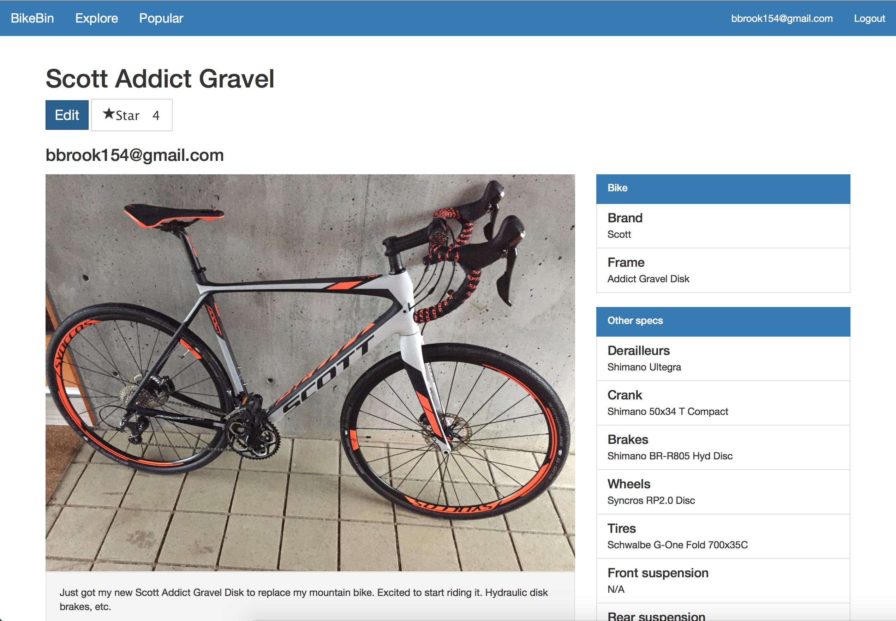

Ben Brook
software engineer @ TrueCar
Work Experience
TrueCar: Software Engineer
January 2017 - Present
Ruby on Rails development w/ some React/Gluestick front-end work.
TrueCar: Software Engineering Intern
June 2016 - December 2016
- Create Spark pipelines for data processing and machine learning to aid price prediction.
- Develop a highly efficient API server in Scala to evaluate predictions and update models.
- Create a front end for the API in React.js.
Mentor Graphics: Software Engineering Intern
March 2015 - September 2015
- Wrote a new error reporting system in C++ that streamlined the process for developers to output and filter error messages and warnings.
- Expanded the coverage of regression tests for products with limited testing.
- Performed performance analyses to find hotspots in code and worked on several potential solutions to increase speed.
Oregon State University Department of Computer Science: Student Researcher
September 2015 - March 2015
- Assisted Dr. Scott Sanner and one of his graduate students in machine learning research.
- Gathered large geospatial datasets for use in piecewise Bayesian models.
- Presented a poster at the 2016 Oregon State Graduate Research Expo
Business Solutions Group: Student Lab Manager
April 2013 - June 2016
- Perform various hardware and software tests on enterprise networking equipment.
- Coordinate new and upcoming projects for a lab of 5-6 students.
- Create bug reports for developers.
Education
Oregon State University: BS Computer Science w/ Computer Systems
January 2013 - September 2016
Projects
BikeBin

- BikeBin is an ongoing project that allows proud bike owners to share their bikes with other passionate enthusiasts.
- Currently under development at github.com/benrbrook/bikebin, with a live version at bikebin.co.
- Built with Meteor, which runs on top of Node.js to allow for both front and back end development in JavaScript.
SF Crime Classification

- Final project for CS 434 Machine Learning.
- We took 12 years of crime data from the City of San Francisco.
- Predicted crime category (assault, robbery, vandalism, etc.) based on time and location.
- Compared the viability of different classifiers (k-NN, random forest, etc.).
- High accuracy (log loss of 3.5) with tuned hyperparameters.
- Created a report viewable here.